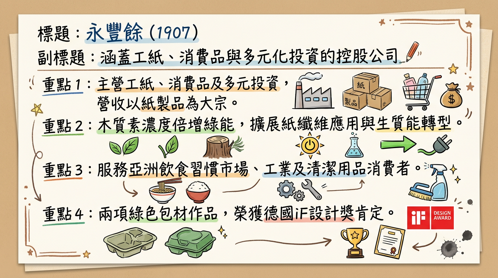
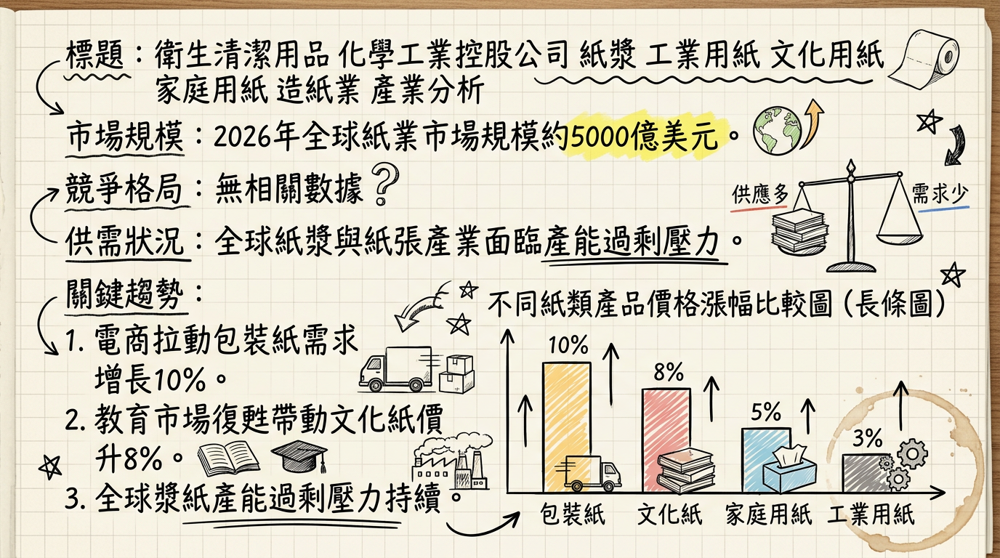
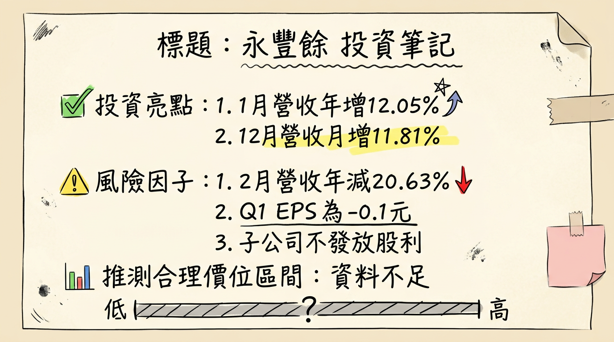

1907 永豐餘 深度研究報告
一句話摘要
永豐餘正積極轉型為「氣候科技公司」，透過林漿紙、工紙與消費品三大核心事業的綠色創新，結合多元投資收益穩定獲利，並藉由永餘智能布局智慧能源管理，為傳統產業注入新成長動能，儘管面臨工紙市場挑戰與短期獲利波動，其循環經濟策略與高值化產品開發具長期增長潛力。
公司概覽
永豐餘投資控股（股票代碼：1907）是一家以一般投資業為主要經營範疇的控股公司，其核心業務涵蓋林漿紙、工紙紙器和消費品，並積極發展多元化投資，致力於從傳統製造業轉型為「氣候科技產業」，推動循環經濟與淨零轉型。
主要業務與產品線：
- 林漿紙事業群： 專注於再生能源規劃（如提升木質素濃度倍增綠能發電）、紙纖維應用（如「非氟防油紙」、紙纖維抽絲替代棉花/聚酯）。
- 工紙紙器事業群： 主要產品為工業用紙和紙器，推動能源轉型（生質能代煤），透過垂直整合提升產品附加價值，並在綠色包材設計上屢獲殊榮。
- 消費品事業群： 涵蓋衛生清潔用品，持續創新優化產品組合。
- 多元化投資/其他事業群： 包含RFID電子標籤、特殊應用材料、智慧能源解決方案（永餘智能）、綠色趨勢利基型產品開發、電子紙科技等，積極投入「再生能源」及「綠色材料」的轉型。
營收結構：
永豐餘的營收主要來自紙製品，其他營運事業則為多元化投資。
| 事業群 | 營收佔比 (約) | 備註 |
|---|
| 紙製品 (林漿紙, 工紙紙器) | 84% | 涵蓋工業用紙、紙器等，2025年Q2法說會提及工紙事業群表現優於平均 |
| 其他營運事業 | 16% | 多元化投資、RFID、特殊材料、智慧能源等 |
公司在台灣設有花蓮廠（最大木質素生質能發電系統）、桃園新屋廠（最大廢水厭氧沼氣發電系統、首座零燃煤汽電共生系統），並在海外（如越南）設有紙器廠。高雄久堂廠參與「人工濕地碳匯提升計劃」。
核心競爭優勢
綠色循環經濟領導者： 永豐餘在「醣經濟」概念下，積極發展生質能發電（花蓮廠木質素、新屋廠沼氣發電）、綠色材料（非氟防油紙、紙纖維抽絲），並透過「碳匯提升計畫」展現其在循環經濟與淨零轉型方面的領導地位和技術創新。
多元化投資組合提供獲利韌性： 透過對永豐金控、元太科技等轉投資事業的策略佈局，帶來穩定的股利收入與權益法投資收益，有效彌補了傳統造紙本業可能面臨的市場波動，支撐整體獲利表現。
智慧能源解決方案的先驅： 旗下永餘智能提供涵蓋創能、儲能、調能、用能與智慧能源管理的一條龍解決方案，切入虛擬電廠、綠電交易及碳管理等新興市場，受惠於台灣碳費制度和全球淨零趨勢，具備顯著成長潛力。
高值化產品開發與垂直整合： 透過紙纖維創新應用、綠色包材設計以及工紙紙器事業的垂直整合，提升產品附加價值，擺脫傳統紙業的低價競爭，創造差異化優勢。
財務分析
月營收趨勢
下表為永豐餘近期月營收數據：
| 月份 | 金額 (千元) | 月增率 MoM | 年增率 YoY |
|---|
| 2026年02月 | 4,423,000 | -32.06% | -20.63% |
| 2026年01月 | 6,510,201 | -2.44% | 12.05% |
| 2025年12月 | 6,673,325 | 11.80% | -8.75% |
| 2025年11月 | 5,968,573 | -4.48% | -13.37% |
| 2025年10月 | 6,248,797 | -2.36% | -3.80% |
| 2025年09月 | 6,400,132 | 5.17% | -3.34% |
| 2025年08月 | 6,085,364 | 1.20% | -11.36% |
2026年初營收表現呈現波動，1月年增率顯著增長12.05%，但2月營收則大幅年減20.63%，反映短期營運仍受市場需求變化影響。
季度數據
| 季度 | 季營收 (億元) | 季增率 QoQ | 年增率 YoY | 每股盈餘 (EPS) | EPS季增率 QoQ | EPS年增率 YoY |
|---|
| 2025年Q3 | 184.98 | 1.70% | -7.90% | 0.91元 | 1720.00% | 93.62% |
| 2025年Q2 | 181.81 | 0.60% | N/A | 0.05元 | N/A | N/A |
| 2025年Q1 | 180.68 | N/A | 0.80% | -0.09元 | N/A | N/A |
2025年永豐餘在第三季實現顯著的EPS成長至0.91元，主要受惠於業外股利收入及權益法投資貢獻，成功彌補本業挑戰，使獲利能力由虧轉盈。
年度趨勢
| 年度 | 全年度營收 (億元) | 年增率 YoY | 每股盈餘 (EPS) |
|---|
| 2025年 (實際) | 736.38 | -6.08% | 0.87元 |
| 2024年 (實際) | 784.13 | 6.20% | 0.98元 |
2025年全年營收和EPS均較2024年有所下滑，顯示整體經營環境仍具挑戰，但EPS的表現受益於多元化投資組合的貢獻。2026年第一季EPS為-0.1元，顯示近期營運壓力。
法說會重點
永豐餘於2026年3月16日召開法人說明會，說明2025年度第四季營運結果。
- 經營策略： 管理層強調將加速轉型氣候科技產業，在既有產業綜效上導入科技思維，將氣候與環境壓力轉化為新商業模式，帶動公司穩健永續成長。
- 林漿紙事業群： 重點在再生能源規劃（提升木質素濃度以倍增綠能發電效益）、拓展紙纖維應用（「非氟防油紙」、紙纖維抽絲）。
- 工紙紙器事業群： 推動能源轉型（生質能為主力燃料）、透過垂直整合提升產品附加價值。
- 消費品事業群： 持續創新、優化產品組合，強化策略夥伴合作競爭力。
- 具體出貨量/訂單能見度： 法說會中未提供各產品線的具體出貨量或訂單能見度數字。
- 產能利用率/資本支出： 法說會中未提及具體產能利用率或資本支出金額。
- 下季/下半年 guidance： 未找到管理層針對下季或下半年的具體財務預測。
券商觀點
【重要提示】 根據提供的研究資料，未找到2025-2026年期間券商對永豐餘的具體目標價、EPS預估數字或評等調整資訊。
財報深度分析
利潤率趨勢
下表顯示永豐餘近期的毛利率、營業利益率與稅後淨利率。
| 期間 | 毛利率 (Gross Margin) | 營業利益率 (Operating Margin) | 稅後淨利率 (Net Profit Margin) |
|---|
| 2025年Q3 | 11.53% | -2.05% | 8.33% |
| 2025年Q1 | 12.50% | -2.25% | N/A (EPS -0.09元) |
| 2024年Q4 | 11.90% | -1.17% | N/A |
| 2024年Q3 | 13.60% | -0.06% | N/A |
| 2024年Q2 | 12.90% | -0.47% | N/A |
| 2024年Q1 | 15.10% | 1.08% | N/A |
永豐餘的毛利率在2024年到2025年Q3呈現波動，介於11.53%至15.1%。值得注意的是，營業利益率在2024年Q1後轉為負值，顯示其核心傳統造紙業務面臨較大的經營壓力。然而，2025年Q3的稅後淨利率卻高達8.33%，這主要得益於來自永豐金控等權益法投資的強勁貢獻，使得公司整體營業外收入大幅成長，成功彌補了本業的虧損，凸顯其多元化投資策略在穩定整體獲利上的關鍵作用。2024年總經理表示，第一季紙業市場需求較弱，但漿價等原物料成本趨緩，緩解了部分壓力。
存貨與營運
| 項目 | 2025年Q3 | 2025年Q2 | 2025年Q1 | 2024年Q4 |
|---|
| 存貨週轉天數 | 71.42天 | N/A | N/A | N/A |
| 存貨佔總資產比率 | 7.9% | N/A | N/A | N/A |
| 存貨週轉率 | 4.85次 | 4.79次 | 4.72次 | 5.48次 |
| 應收帳款收現天數 | 69.14天 | N/A | N/A | N/A |
| 應收帳款週轉次數 | 4.79次 | 4.89次 | 4.66次 | 5.25次 |
2025年Q3存貨週轉天數為71.42天，存貨佔總資產比率為7.9%，顯示其存貨管理維持在相對健康的水平，沒有異常堆積現象。應收帳款收現天數也相對穩定。
資本支出
- 2024年資本支出： 主要用於中國鼎豐廠新增4萬噸生活用紙產線、花蓮廠震災設備及建築補強，以及各廠製程設備汰舊換新以改善能源耗用及減碳。
- 未來資本支出計畫： 將持續投入於提升木質素提煉濃度（綠能）、擴展紙纖維抽絲應用、提高工紙紙器事業生質能代煤量、消費品事業能源設備轉型更新、以及多元化事業（智慧能源解決方案、綠色特殊材料、電子標籤）的發展。
- 2025年Q3折舊費用： 1,160,386千元。
股權異動
- 董監事/大股東申報轉讓： 2024-2026年期間未找到最新紀錄。最近一次為2022年2月何壽川贈與8,350張。
- 庫藏股買回： 2024-2026年期間未找到紀錄。
- 可轉換公司債 (CB)： 2024-2026年期間未找到發行資訊。
- 現金增資或減資： 2024-2026年期間未找到計畫。
- 股利政策：
*
2025年股利（對應2024年盈餘）： 擬配發現金股利0.8元。配發率達81.6%。除息日2025年7月11日，發放日2025年8月8日。
* 2024年股利（對應2023年盈餘）： 配發現金股利0.9元。除息日2024年7月11日，發放日2024年8月9日。
觀察： 永豐餘持續穩定配發股利，已連續8年配息，顯示其對股東的回饋承諾。
其他財報重點
- 負債比率： 2025年Q3為48.81%，較2025年Q2的50.51%有所下降，顯示財務結構趨於穩健。
- 自由現金流量： 2025年Q3為1,908,863千元，顯示公司在營運中能產生正向現金流。
- 業外收支： 2025年Q1業外損益合計3.8億元，其中採用權益法認列之投資損益達3.54億元（年增65%），為業外收入的主要貢獻來源，有效彌補了財務成本（3.07億元，年增20.2%）的增加。2025年Q3亦是來自權益法投資的強勁貢獻支持了獲利。
產業分析
產業數據
永豐餘的核心產業為造紙業，並積極拓展綠色科技與能源管理。
* 2026年全球紙業市場規模預計達到約
5000億美元。
* 全球漿紙及林產品行業預計在2026年奠定溫和復甦基礎。
* 文化紙： 2026年價格較去年提升8% (受教育市場復甦帶動)。
* 包裝紙： 2026年價格上漲約10% (受電商市場拉動)。
* 工業用紙： 需求穩定，價格小幅上漲約5%。
* 全球紙漿與紙張產業面臨產能過剩壓力，2025年經歷大規模產能出清。
* 2026年下半年，北美箱板紙產能收縮可能推動市場由鬆轉緊，但新產能釋放及全球供需失衡仍帶來挑戰。
* 中國生活用紙市場2025年11月裝機總產能達2265.8萬噸，顯示產能過剩。
* 台灣造紙業2024年總生產量年減4.7%，跌破400萬公噸，為近九年低點。2025年預期以內需支撐，長線包裝減塑趨勢將帶動工紙需求。
- 產業平均毛利率水準： 2025年造紙行業成本端價格分化，傳統文化用紙需求收縮，瓦楞原紙、箱紙板受電商物流拉動需求韌性。永豐餘投控2025年Q1雖營收年成長0.8%至180.68億元，但歸屬於母公司淨損1.45億元，EPS-0.09元，反映獲利能力面臨挑戰。
競爭格局
永豐餘在台灣造紙業居龍頭地位，其多元化佈局與綠色科技轉型使其與傳統同業形成差異。
台灣同業比較 (2024年數據)：
| 公司名稱 | 股票代碼 | 2024年營收 (億元) | 營收成長率 (%) | 稅後純益 (億元) | 獲利率 (%) | 股東權益報酬率 (%) | 競爭優勢/特色 |
|---|
| 永豐餘投控 | 1907 | 784.13 | 6.15 | 16.31 | 2.08 | 1.97 | 多元化氣候科技轉型、醣經濟、再生能源、多元投資組合 |
| 榮成紙業 | 1909 | 478.00 | 2.33 | -3.74 | -0.78 | N/A | 低碳技術、循環經濟領先、連續入選「Carbon Clean 200」 |
| 正隆紙業 | 1904 | 451.78 | 7.15 | 6.05 | 1.34 | N/A | 主要造紙及紙器生產商 |
| 中華紙漿 | 1905 | 207.68 | -0.89 | -2.52 | -1.21 | N/A | 主要紙漿及文化用紙生產商 |
| 永豐餘消費品實業 | N/A | 108.97 | 6.16 | 7.43 | 6.82 | 12.78 | 生活用紙領域領導者，高獲利能力 |
永豐餘投控在營收規模上居台灣造紙業之首，2024年仍維持獲利，而多數同業面臨虧損。其在綠色轉型與多元化投資上的投入，使其在獲利能力和永續發展方面展現出與傳統紙業不同的韌性。永豐餘消費品實業作為集團子公司，展現出優異的獲利能力和股東權益報酬率。
產業趨勢
綠色永續與循環經濟：
* 具體影響： 全球淨零排碳趨勢推動造紙業加速綠色實踐。永豐餘的花蓮廠設有全台最大的木質素生質能發電系統，桃園新屋廠有全台最大的廢水厭氧沼氣發電系統（年減碳近2萬公噸），並建置首座零燃煤汽電共生系統。這將提升其環保形象，降低碳排放成本，並創造新的綠能收入。
非塑材料與紙纖維創新應用：
* 具體影響： 對塑膠污染的關注促使紙纖維在替代塑膠方面需求增長。永豐餘拓展紙纖維抽絲技術（替代棉花/聚酯）和「非氟防油紙」，這些高值化、環保型產品有助於其開拓新市場，擺脫傳統紙品競爭，提升產品附加價值。
智慧能源管理與碳管理：
* 具體影響： 台灣碳費制度於2025年開徵，企業減碳壓力升高。永豐餘旗下的永餘智能提供創能、儲能、調能、用能與智慧能源管理解決方案，包括綠電交易、儲能、微電網、虛擬電廠、碳管理等。這塊業務將受益於政策推動，為公司帶來新的服務收入和成長點。
對永豐餘而言的具體機會和威脅
*
綠色轉型領導者： 醣經濟、生質能發電、沼氣發電等技術優勢，使其在綠色永續趨勢下具領先地位，提升品牌價值與市場競爭力。
* 智慧能源解決方案新藍海： 台灣碳費制度及淨零趨勢，為永餘智能帶來巨大市場需求，開闢新的業務增長點。
* 高附加價值產品開發： 紙纖維抽絲、非氟防油紙等創新產品，有助於擺脫傳統紙業的價格競爭，提升獲利空間。
* 政策支持： 政府的碳費和綠能發展政策，有利於永豐餘在再生能源和減碳技術上的投資回報。
*
全球供需失衡與價格競爭： 紙漿和紙板市場的產能過剩及低價競爭，仍可能影響核心業務獲利。
* 原物料成本波動： 木漿、廢紙等原物料價格，及能源成本上升，對生產成本造成壓力。
* 傳統文化用紙需求縮減： 數位化浪潮持續衝擊，需持續轉型以應對。
* 宏觀經濟不確定性： 全球經濟放緩、地緣政治風險等，可能影響市場需求。
相關投資題材的具體連結
- AI/高效能運算 (HPC) 對包裝用紙的需求： AI運算帶動全球PCB產業成長，間接提升對高階電子產品包裝材料的需求，對永豐餘的工紙紙器事業群構成間接利好。電商的持續發展也將推動包裝紙需求。
- 智慧能源解決方案： 永豐餘的儲能、微電網、虛擬電廠等智慧能源管理方案，在優化能源調度、預測電力需求方面，可藉由AI技術提升效率，間接受益於AI發展帶來的產業升級。
- 電動車與輕量化材料： 若永豐餘的紙纖維創新應用能發展出輕量化、高強度的材料，未來有潛力應用於電動車等產業，以提升續航力。
近期催化劑
利多事件
- 2025年12月08日： 大樹舊鐵橋濕地獲頒「國家永續發展獎」，肯定其在永續環境的貢獻。
- 2025年11月26日： 榮獲「台灣企業永續獎」七大獎項，提升企業社會責任形象。
- 2025年11月21日： 市場傳言工紙題材落底反彈，原料成本下降、越南與中國工紙價格回升，帶動股價短期資金迴流。
- 2025年10月23日： 旗下三家公司獲「2025淨零產業競爭力大獎」卓越獎，證明其在循環經濟的成效。
- 2025年10月15日： 豐川綠能科技與桃園市府合作龜山水資源回收中心沼氣發電系統正式啟用，為全台首座且發電規模最大的ROT模式水資源回收中心，預計年發電量640萬度。
- 2025年08月14日： 法說會表示對美出口佔比僅10%，關稅影響有限，且2025年Q2 EPS轉盈為0.05元。
- 2025年07月30日： 因綠色採購逾新台幣60億元，獲環境部表揚為績優企業。
- 多元化投資收益： 來自永豐金控等權益法投資的強勁貢獻，持續支撐整體獲利。
利空事件
- 2026年03月10日： 2026年2月營收為44.23億元，較去年同期大幅減少20.63%，累計1-2月營收年減3.95%，顯示近期營運仍受挑戰。
- 2026年03月02日： 子公司肇慶鼎豐林業有限公司決議不發放2025年股利。
- 2026年01月04日： 2026年第一季每股盈餘（EPS）為-0.1元，顯示短期獲利能力轉弱。
- 外資/投信賣超： 截至2026年03月09日，外資累計賣超2,402張，投信累計賣超239張，顯示法人對近期展望持謹慎態度。
⭐ 成長動能時間軸
| 時間點 | 成長動能類型 | 具體描述 |
|---|
| 2024年 | 擴廠/產能 | 中國鼎豐廠新增年產能4萬噸生活用紙產線。 |
| 2024年 | 資本支出 | 花蓮廠因震災設備及建築結構補強，各廠生產設備汰舊換新以改善能源耗用及減碳。 |
| 2025年03月 | 產能/技術 | 永豐餘工紙新屋廠智慧微電網示範場域完成，結合汽電共生、儲能、再生能源，預估每年可節省5%-10%用電支出。 |
| 2025年10月 | 新市場/產能 | 豐川綠能科技與桃園市府合作的龜山水資源回收中心沼氣發電系統正式啟用，年發電量640萬度，年減碳逾7,000噸。 |
| 2025年Q4 | 需求面 | 市場預期工紙市場落底反彈，原料成本下降，越南與中國工紙價格回升，有望帶動營運。 |
| 持續進行中 | 新產品/技術 | 林漿紙事業群：提升木質素提煉濃度倍增綠能發電效益，拓展紙纖維應用（非氟防油紙、紙纖維抽絲替代棉花/聚酯）。 |
| 持續進行中 | 新市場/客戶 | 永餘智能與華國能源合作打造「電能移轉複合動態調節備轉容量輔助服務」（E-dReg）儲能案場，進入儲能市場。 |
| 持續進行中 | 新市場/產品 | 積極佈局RFID電子標籤、特殊應用材料、智慧能源解決方案（儲能、微電網、虛擬電廠、碳管理）。 |
| 持續進行中 | 需求面 | RFID電子標籤、消費品需求穩定增長，循環經濟、再生能源及綠色材料應用需求增加。 |
| 長期展望 | 策略轉型 | 從傳統造紙業轉型為「氣候科技產業」，透過醣經濟、綠色材料、能源管理發展高值化產品。 |
2026 展望
成長動能
氣候科技轉型效益顯現： 隨著龜山沼氣發電系統的啟用和新屋廠智慧微電網的完善，永豐餘在再生能源發電與智慧能源管理領域的佈局將逐步產生實質效益，不僅降低自身碳排與能源成本，永餘智能對外提供的綠電交易、儲能、碳管理服務也將成為新的營收增長點。
多元投資組合持續貢獻： 來自永豐金控等權益法投資的穩定獲利，將繼續作為公司整體營運的堅實後盾，有效平抑傳統紙業景氣波動帶來的衝擊。
工紙市場需求回溫： 預期2025年Q4工紙市場的觸底反彈，加上原料成本下降及越南、中國價格回升，若此趨勢延續至2026年，將有助於工紙紙器事業群的盈利能力改善。
高值化綠色產品推動： 非氟防油紙、紙纖維抽絲等創新綠色材料的市場拓展，將逐步提升產品附加價值和毛利率，擺脫低端競爭。
風險
傳統產業營運壓力： 儘管積極轉型，林漿紙和工紙紙器等傳統核心業務仍面臨全球產能過剩、價格競爭及原物料成本波動的風險，2026年Q1的負EPS與2月營收年減顯示挑戰依然存在。
宏觀經濟不確定性： 全球經濟成長放緩、中國經濟下行壓力以及地緣政治風險，可能影響整體消費需求及供應鏈穩定性。
新能源業務規模化與獲利時間： 智慧能源解決方案等新興業務雖具潛力，但其規模化進程和對整體獲利的貢獻程度仍需時間驗證，初期投入可能較高。
關稅政策變化： 儘管永豐餘評估美國對台關稅（20%）影響有限（對美出口約佔總營收10%），但全球貿易保護主義的興起仍可能帶來新的不確定性。
投資結論
永豐餘（1907）正處於關鍵的戰略轉型期，從傳統造紙業跨足「氣候科技產業」，並透過多元投資組合分散風險、穩定獲利。儘管其傳統核心業務仍面臨市場挑戰，導致短期營運數據波動，但其在綠色循環經濟、智慧能源管理和高值化產品開發上的前瞻佈局，為公司帶來長期的成長潛力。
轉型驅動的長期價值： 永豐餘在「醣經濟」及綠色科技領域的投入，使其在淨零排放趨勢下具備稀缺性和領導地位。永餘智能的智慧能源解決方案，有望在台灣碳權及綠電市場中扮演關鍵角色，開闢新的高毛利業務。
多元資產的獲利韌性： 來自永豐金控等轉投資事業的穩定股利和權益法收益，有效對沖了傳統本業的週期性風險，提供公司營運的緩衝墊，是其獲利結構的重要支撐。
工紙市場築底反彈機會： 隨著原料成本下降和市場預期的回溫，工紙紙器事業群有望在2026年下半年逐步改善獲利，為整體營運提供額外動能。
穩健的股利政策： 儘管營運面臨挑戰，公司仍維持連續8年配息，展現對股東的承諾，適合尋求穩定股息的投資者。
考量永豐餘的轉型策略與多元資產價值，並評估其核心業務的挑戰與新事業的成長潛力，我們建議投資人可持續關注其在氣候科技領域的發展成效及工紙市場的復甦情況。
投資建議區間： 基於其轉型策略與多元資產價值，並考量短期獲利波動及中長期成長潛力，建議目標價區間為
新台幣 19 - 24 元。此區間反映了其作為控股公司的穩定收益、轉型氣候科技的潛在溢價，同時也考量了傳統業務的經營壓力。
本報告由 AI 自動產生，資料來源為公開網路資訊，僅供參考，不構成投資建議。產生時間：2026-03-11 23:00
📊 資訊卡


